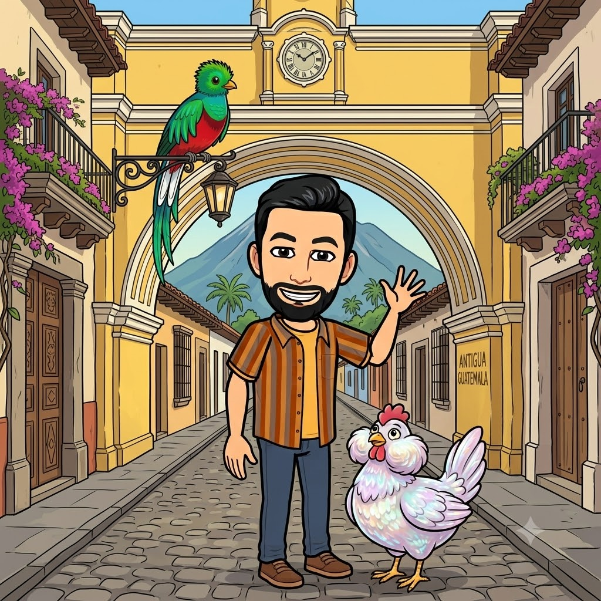
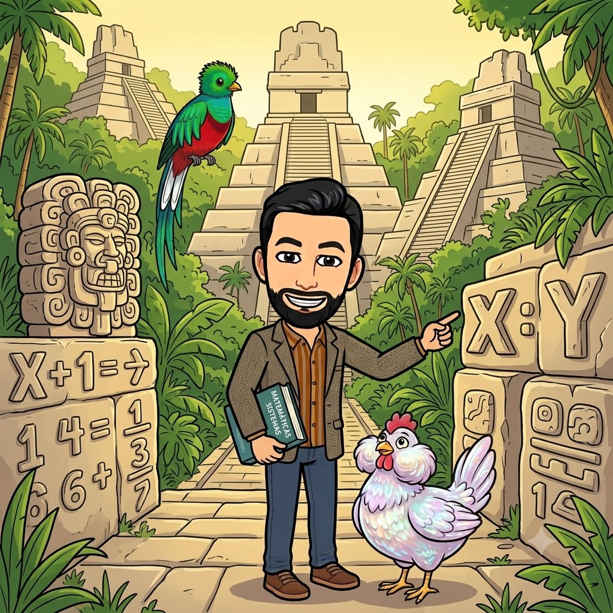
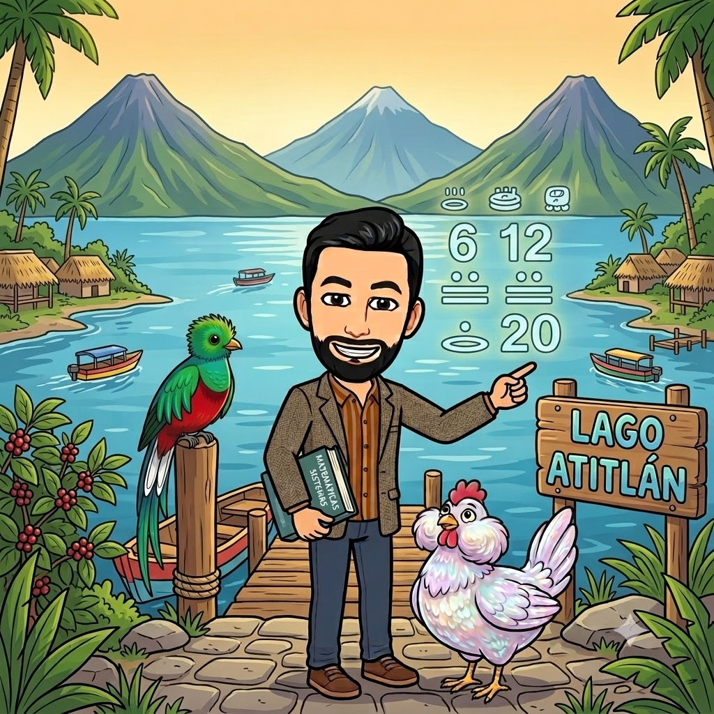
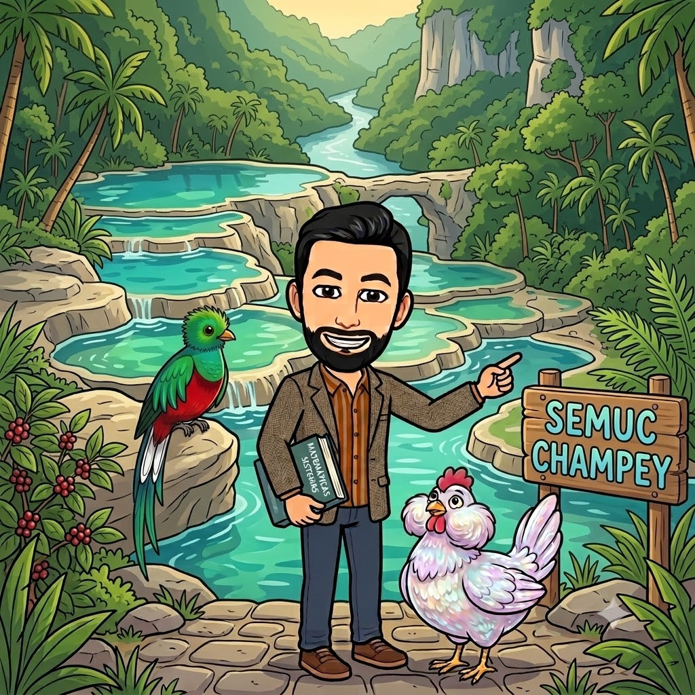
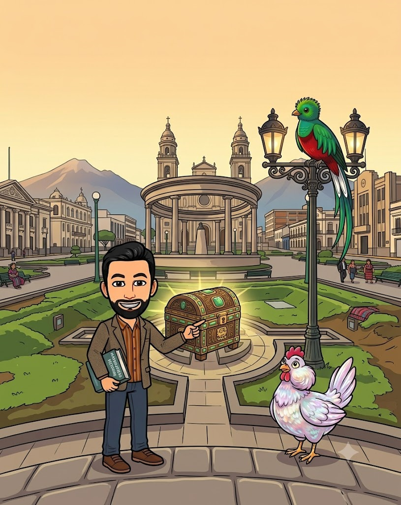
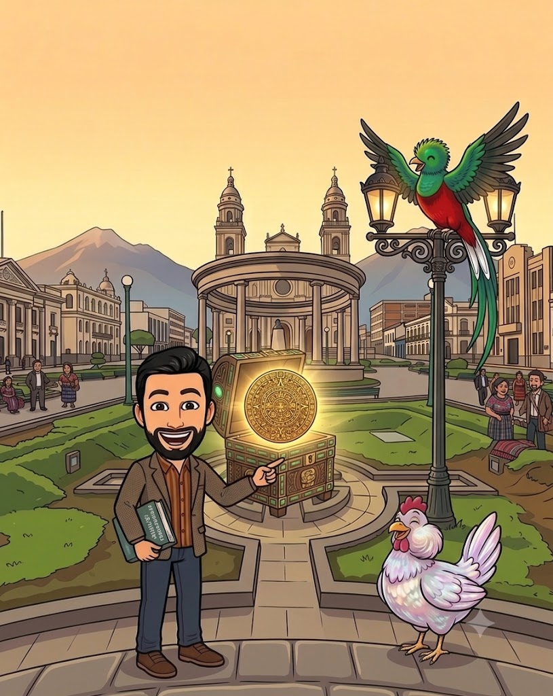
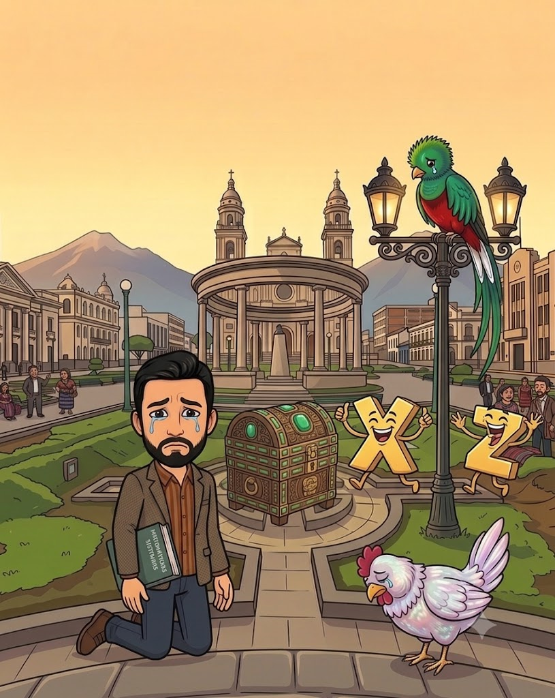

El profesor de matemáticas se ha enterado de que a los pies del imponente Volcán de Fuego se ha cometido un terrible delito: ¡las temibles villanas Incógnitas (X, Y y Z) han robado el sagrado Círculo Dorado del Señor Quetzal! Sin él, el equilibrio natural de los bosques guatemaltecos se romperá.
Por suerte, la gallina Gladis, valiente descendiente directa de la gran saga de los T-Rex, ha decidido unirse al Señor Quetzal en una persecución contrarreloj por todo el país. Para capturar a las villanas, tendrás que rastrearlas, despejar sus valores y resolver los sistemas de dos ecuaciones que han dejado bloqueando vuestro paso.

Gladis y el Señor Quetzal llegan batiendo las alas a Antigua, donde las espera el profesor de Matemáticas. Bajo el Arco de Santa Catalina, unas misteriosas huellas se dividen. Las villanas han camuflado sus rastros usando un sistema lineal básico. ¡Resuélvelo para saber hacia dónde han huido!

Adentrándose en la densa selva del Petén, subís las escalinatas del templo maya. Una inscripción oculta en la piedra retiene el avance de la gallina Gladis. El método de sustitución o reducción te vendrá de maravilla aquí.

¡El Señor Quetzal divisa a las villanas cruzando el majestuoso lago rodeado de volcanes! Para conseguir una lancha rápida y alcanzarlas, debes resolver este sistema que el lanchero local os propone como acertijo.

¡Casi las tenéis! Entre las espectaculares pozas escalonadas de agua cristalina y cuevas, las Incógnitas se han blindado tras el sistema más complejo de la ruta. ¡Demuestra tu nivel de 3º de la ESO y desvélaslas!

Habéis acorralado a las villanas en Quetzaltenango. Tienen el Círculo Dorado metido en un cofre sagrado. Para abrir el candado final, debes introducir el código de activación.
Clave del Candado: La SUMA TOTAL de todos los valores encontrados (es decir: x1 + y1 + x2 + y2 + x3 + y3 + x4 + y4).

¡El cofre se abre con un destello dorado! Gladis da un cacareo triunfal que resuena como el rugido de un mismísimo T-Rex y el Señor Quetzal alza el vuelo con el Círculo Dorado a buen recaudo.
Las Incógnitas han sido despejadas y derrotadas gracias a tus perfectas habilidades algebraicas. ¡Has salvado el equilibrio de Guatemala!

El código no encaja o el tiempo se ha esfumado en la selva. Las incógnitas han escapado cruzando la frontera con el artefacto mágico.
¡No dejes que se salgan con la suya! Revisa tus despejes, repasa los signos al operar y vuelve a intentarlo con Gladis.